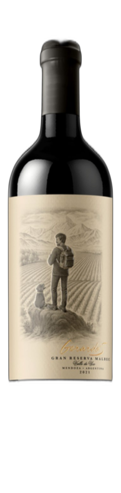

De color rojo profundo con reflejos violáceos. En nariz despliega aromas de mora, ciruela madura y notas de moca y chocolate aportadas por su prolongada crianza. En boca es amplio y sedoso, con taninos maduros, gran volumen y un final persistente que resalta su complejidad y elegancia.
Deep ruby red with violet hues. The nose reveals blackberry and ripe plum, layered with mocha and dark chocolate from extended oak aging. On the palate, it is full-bodied and silky, with mature tannins, generous depth, and a long, persistent finish that highlights its complexity and elegance.
entre 14 y 18 meses en roble francés, seguidos de 10 meses de guarda en botella.
14 to 18 months in French oak, followed by 10 months in bottle.
costillas, carnes de cocción lenta y chocolate amargo.
ribs, slow-cooked meats, and dark chocolate.